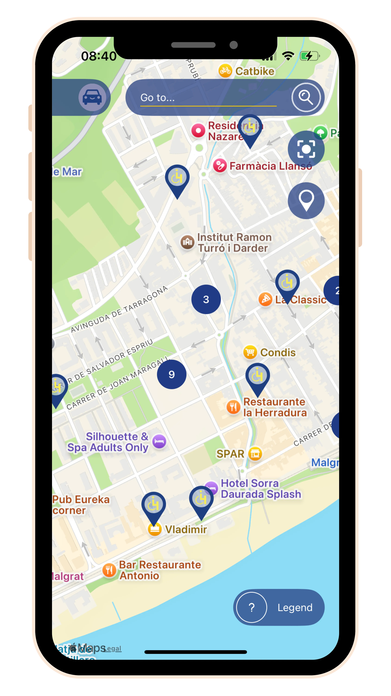

Parcheggia facilmente con Park4Dis People
Se cerchi una piattaforma trasversale e interurbana per la gestione e l'accesso alla localizzazione di parcheggi riservati o altre aree di parcheggio consentite a livello europeo, ti abbiamo coperto.

Vista globale dei parcheggi PMR
Normative locali riassunte e accessibili
Guida ai parcheggi e comandi vocali
Facile segnalazione di incidenti e nuovi parcheggi
